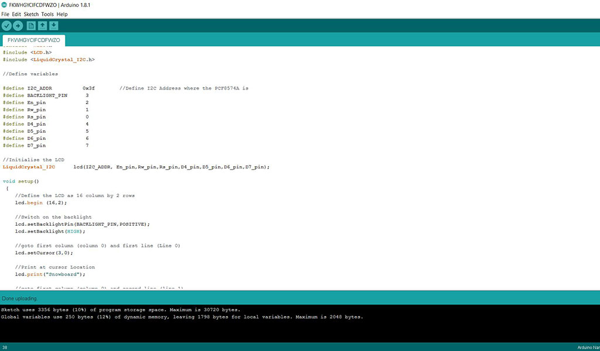
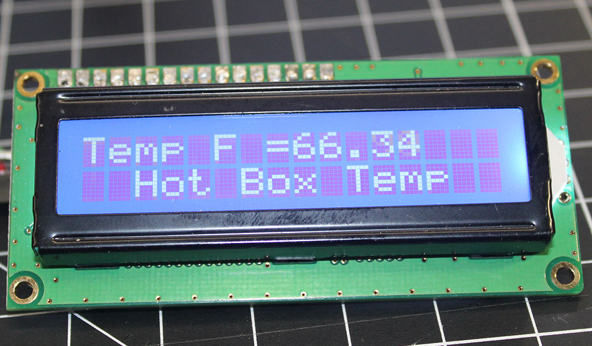
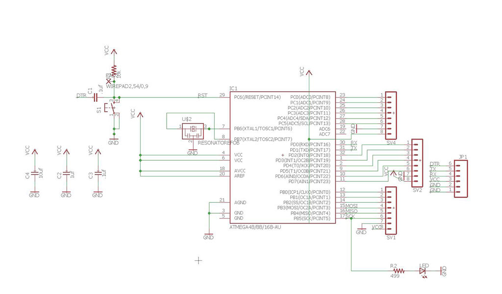
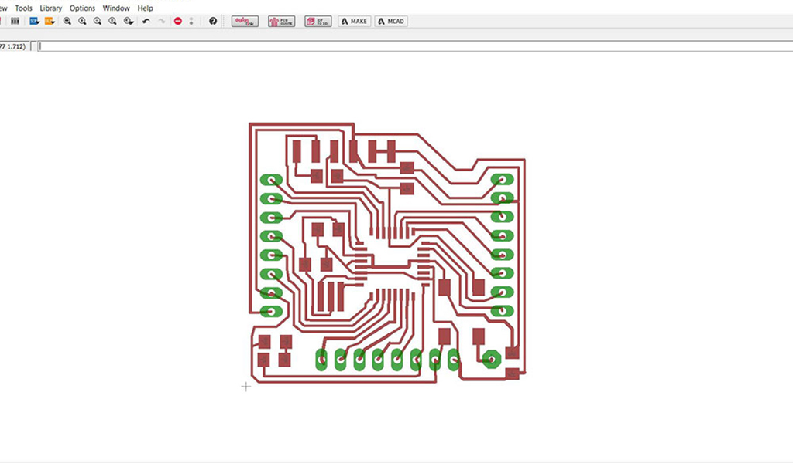
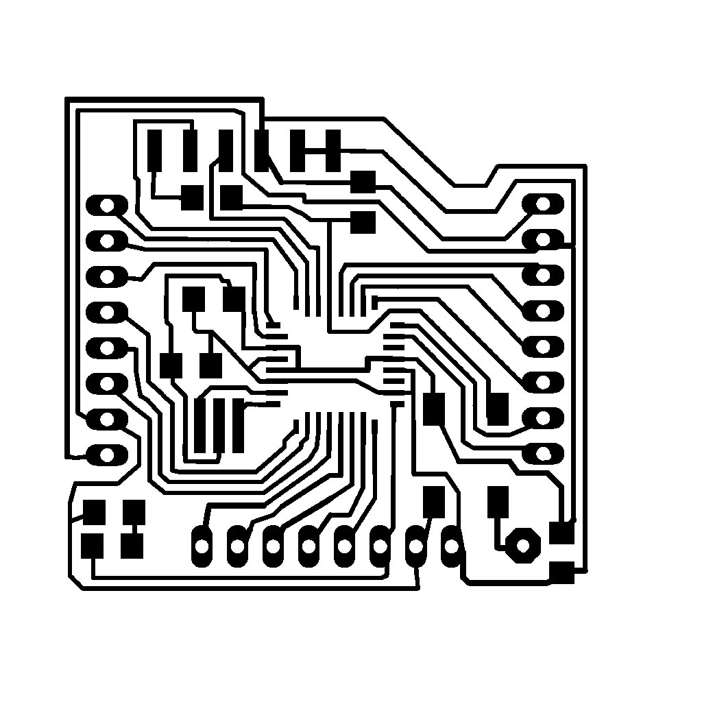
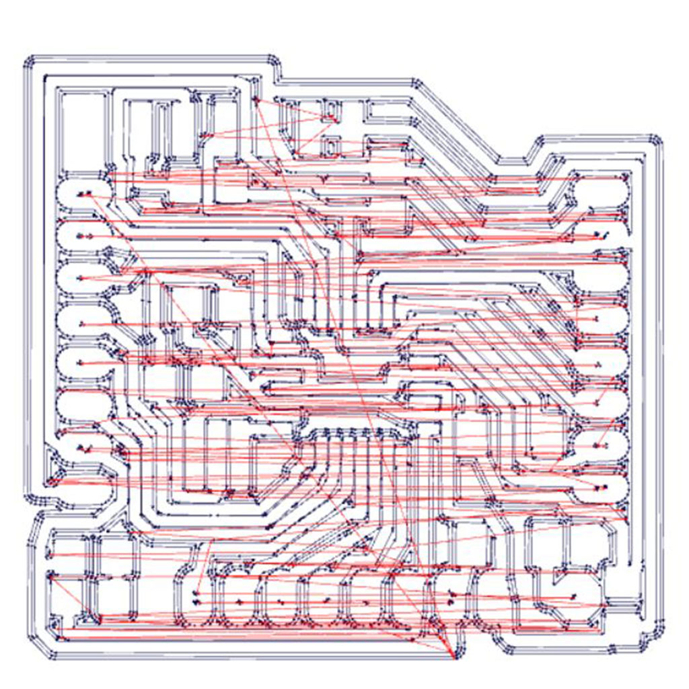
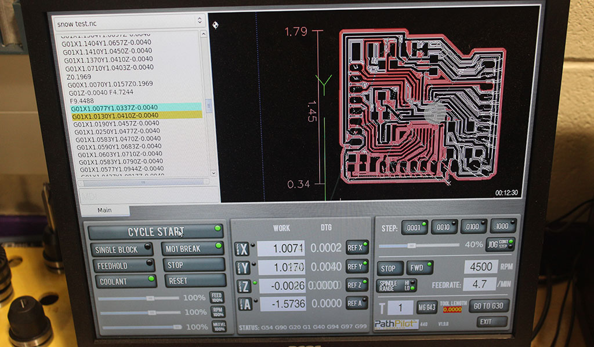
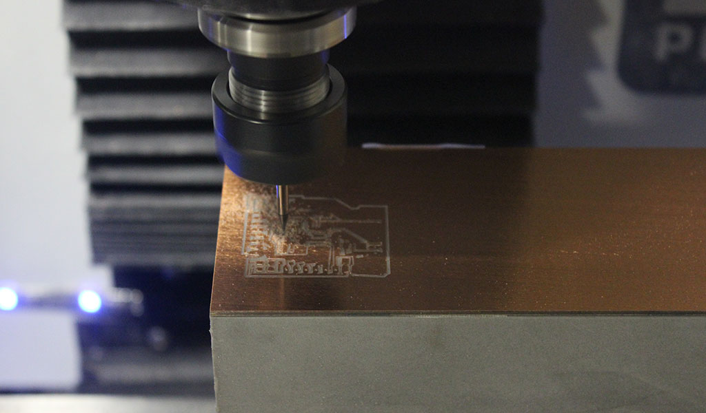
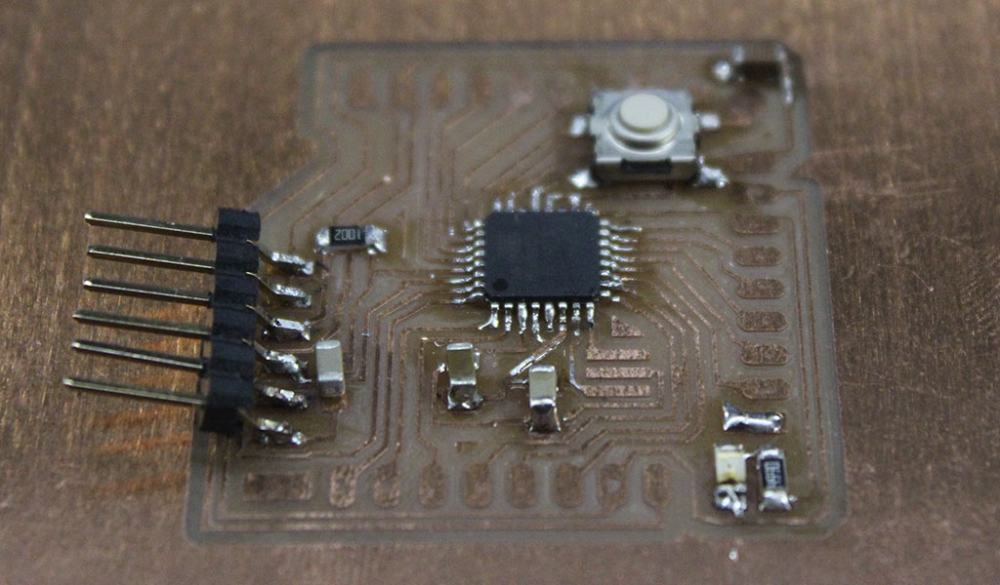

The Assignment for week 10 was to design a circuit to take advantage of an output device. I need to work on connecting an LCD screen to the Nano/fab board first so that I can have an easy to read display of what is going on in the compartment of the hot box. I will also explore the possiblity of a wireless transmitter so that I can monitor the system from a remote location in my house. I settled on a generic 16x2 ic2 LCD display. My goal is to have it display the hotbox temp providing a more stable reading of the actual temperature in the box. The sensor on the control module controling the heat source is actual in line with the fan to help keep the fan/heater from running constantly while it is pre-heating the box. The LM34 sensor will desplay the actual temp - once the box is preheated these sensors should read the same.
Before realizing that I could not use a "commercial" board in my final project I built one of the free Arduino Nano boards that were donated to our lab. After getting the wires connected to the board I was able to connect the ground, 5V, A4 and A5 pins to the Arduino to test my code. As you can see I was successful in getting a display to appear. I was also curious so I tried to hook up my sensor (Input Device - Later Assignment) and was successful with getting a readout as well.
  LCD readout codeFor my final project will need to get both of my input and output devices working together in the same code so that I can monitor the system with one look. Right now I am loading either the sensor or the LCD code in order to read them. Mixing the two shouldn't be too difficult as I am pretty sure it is as simple as telling the chip to "print" what the sensor is reading.
After Discussing this assigment with Terance I have decided to mill my own board. I have based my design off of the Satshakit found on the Fab Academy Archive site. I modified some of the traces on the schematic to allow for a better end result when milling. Some of the traces did not mill out correctly. From what I can tell they were too close for my machine to identify as seperate traces.
      The final step is to load the bootloader and flash the Arduino code on to the micro controller. According to my research the chip should act like an Arduino Clone.
This is StoneWork, a free, fully standards-compliant CSS template designed by TEMPLATED. The photos in this template are from Fotogrph. This free template is released under the Creative Commons Attribution license, so you're pretty much free to do whatever you want with it (even use it commercially) provided you give us credit for it. Have fun :)